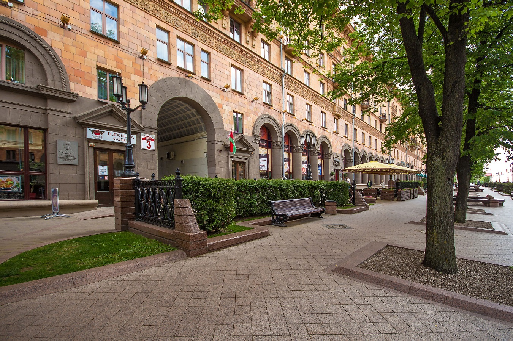
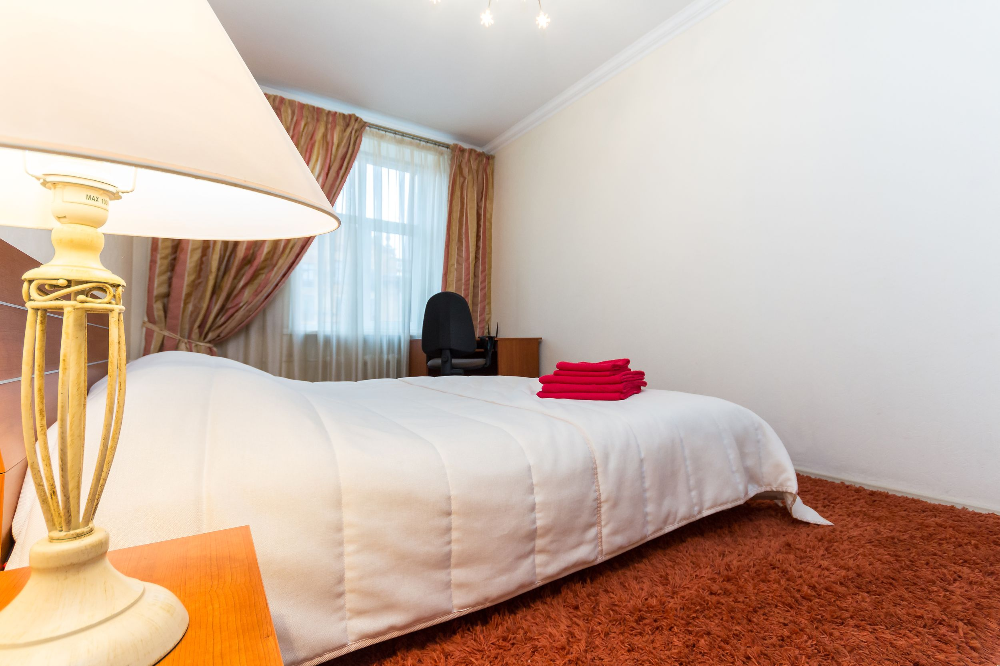
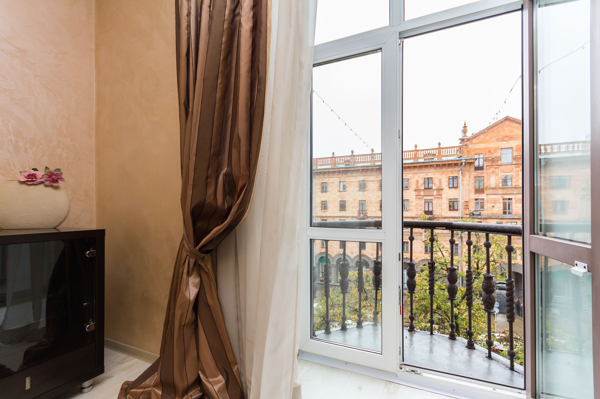
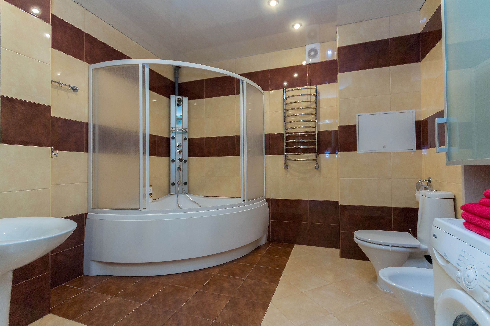

В самом центе Минска, в историческом здании с высокими потолками на улице Ленина, отдохните в Europa apartment. С комфортом могут разместиться до 4 человек, апартаменты с кухней и огромной ванной, в нескольких минутах ходьбы от достопримечательностей города, музеев, театров, кафе и магазинов.
- В апартаментах:
- Двуспальная кровать с удобным ортопедическим матрасом
- Раскладной двуспальный диван, кондиционер
- ЖК телевизор
- Безлимитный скоростной Wi-Fi
- Качественная бытовая техника и сантехника
- СВЧ-печь, электрочайник
- Фен, утюг, гладильная доска
- Полотенца, душ-гель, шампунь
- Чай, кофе
- Угловая ванная с массажной душевой стойкой
- Идеальная чистота, для некурящих
- Отчетные документы для бизнес поездок.